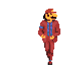

Content
A meme is an idea, behavior, or style that spreads from person to person within a culture.
A meme acts as a unit for carrying cultural ideas, symbols, or practices that can be
transmitted from one mind to another through writing, speech, gestures, rituals, or other imitable phenomena with a mimicked theme.

Supporters of the concept regard memes as cultural analogues to genes in that they
self-replicate, mutate, and respond to selective pressures.